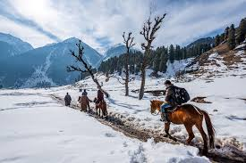
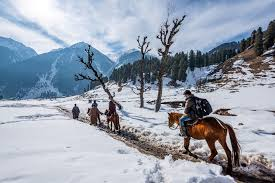
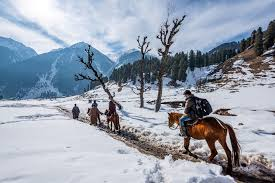

| Destination Name | Country | Best Time to Visit |
|---|---|---|
| Kedarnath | India | Summer (May to June),Autumn (September to October) |
| Kanya Kumari | India | Monsoon season (June to September), October to February |
| Jammu Kashmir | India | Summer (April to June),Autumn (September to November) |
| Cameron Highlands | Malaysia | March to October |
| Bangkok | Thailand | Cool Season (November to February) |
| Vietnam | Vietnam | December - March |
